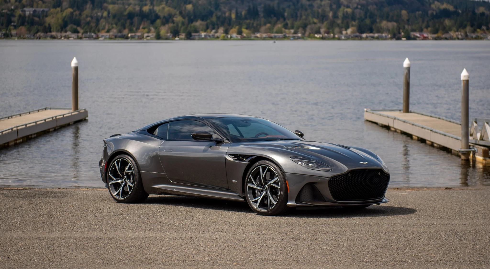
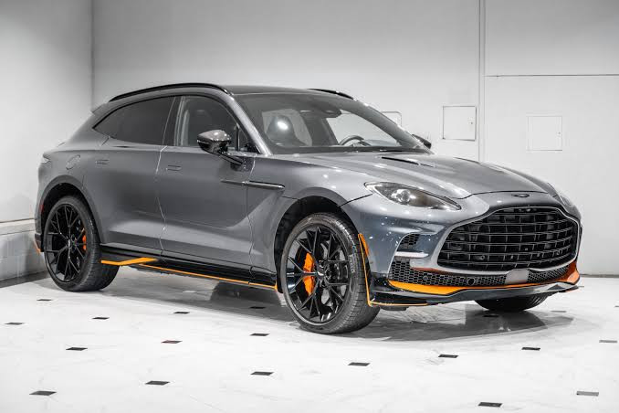
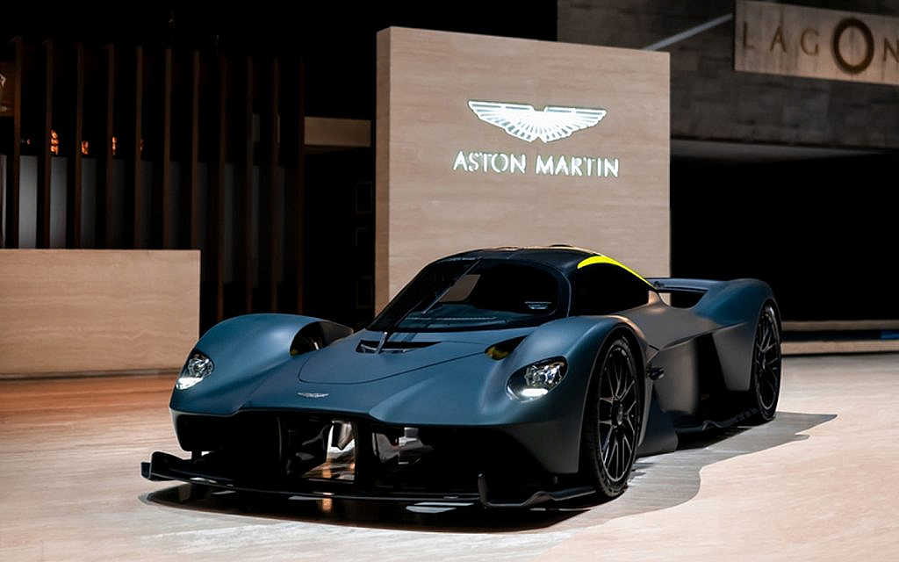
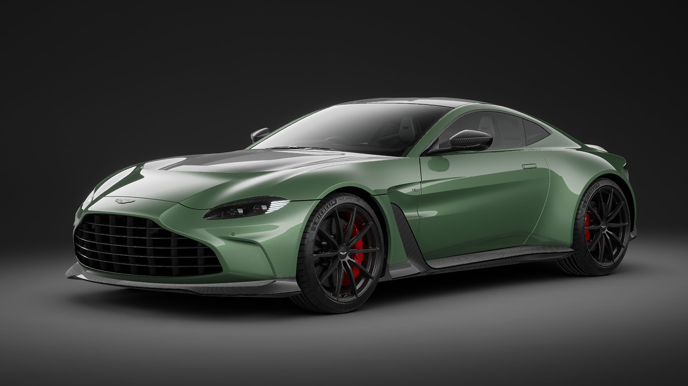
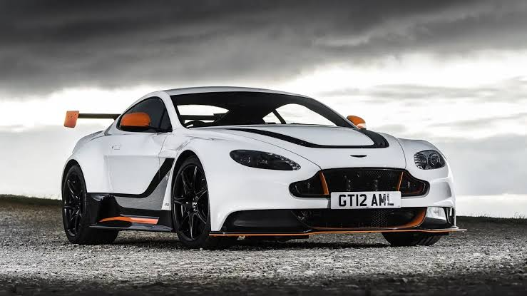
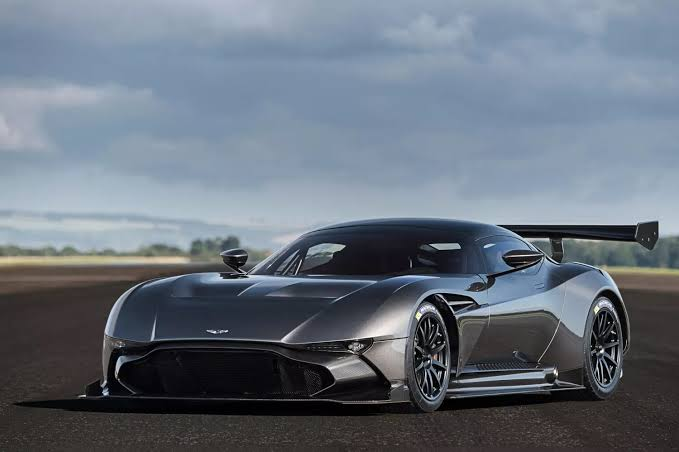

| Preço | R$ 2,8 milhões |
| Consumo | 5,5 km/L |
| 0 a 100 km/h | 3,4s |
| Cavalos | 725 cv |
| Torque | 91,8 kgfm |

| Preço | R$ 2,5 milhões |
| Consumo Cidade | 6,3 km/L |
| 0 a 100 km/h | 4,5s |
| Cavalos | 550 cv |
| Torque | 71,4 kgfm |

| Preço | US$ 87 ~ US$ 93 mil |
| Consumo Cidade | 7,2 km/L |
| 0 a 100 km/h | 3,8s |
| Cavalos | 510 cv |
| Torque | 61,2 kgfm |

| Preço | US$ 87 ~ US$ 93 mil |
| Consumo Cidade | 4,8 km/L |
| 0 a 100 km/h | 4,9s |
| Cavalos | 426 cv |
| Torque | 47,9 kgfm |

| Preço | R$ 1,3 milhões |
| Consumo Cidade | 3,4 km/L |
| 0 a 100 km/h | 3,9s |
| Cavalos | 565 cv |
| Torque | 63,2 kgfm |

| Preço | US$ 2,3 milhões |
| Consumo Cidade | 3,5 km/L |
| 0 a 100 km/h | 2,9s |
| Cavalos | 831 cv |
| Torque | 79,5 kgfm |